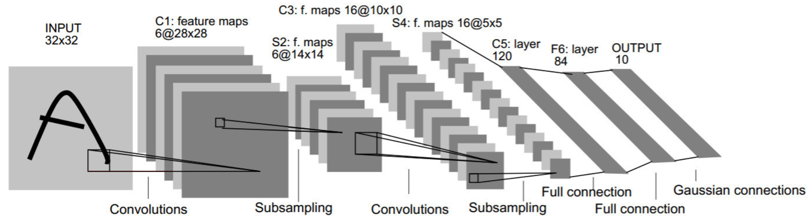
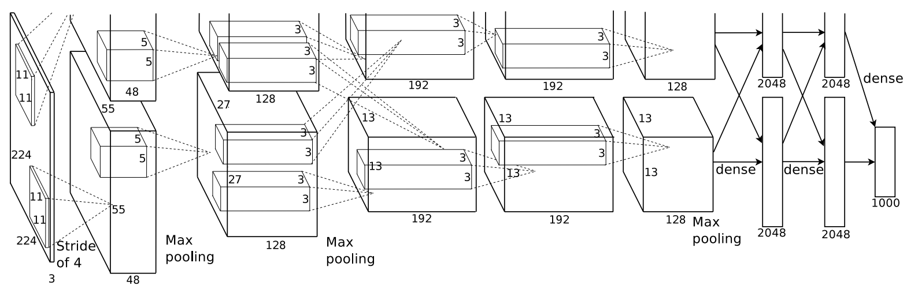

卷积神经网络 Convolutional Neural Network⚓︎
参考文献
我们给小猫小狗的图片做分类，用还不错的相机拍出的照片 12M 像素，算上 RGB 就 36M 元素，如果使用大小为 100 的单隐藏层 MLP，就需要 3.6B 参数。
但问题是这远多于世界上的小猫小狗总数，要这样训练还不如直接硬给图片直接做编码，所以有了卷积神经网络。
卷积神经网络应保持两个原则：平移不变性，局部性。由于需要保留空间语义，我们还是记读入的图片为 \(x_{i,j}\)，卷积的区域为 \(v_{a,b}\)，那么过一道 CNN 得到的结果为：
显然这样已经满足平移不变性。对于局部性，因为图片在近邻的部分表义相似，当评估 \(h_{i,j}\) 时，我们不应该用远离 \(x_{i,j}\) 的元素，所以希望 \(|a|,|b|\) 不要太大，可以设定一个合理的阈值 \(\Delta\)。
初学 CNN 时有关卷积的定义的疑惑
初学 CNN 的时候很疑惑，以前 ACM 里学的多项式卷积，明明是 \(a_i\cdot b_j\) 贡献到 \(i+j\) 位置处的，到这里怎么定义变得如此蹩脚呢（或者说，看着变成差卷积了）？
其实确实是这样，无论是 OI 还是 MO 当中都是这么定义的，只不过在这里我们考虑这两类：
- 二维交叉相关：
- 二维卷积：
由于对称性，两者本质同构，所以后续我们称 CNN 也就将"交叉引用"默认成"卷积"了。
卷积层 Convolutional Layer⚓︎
卷积核 Kernel⚓︎
通俗地说 Input * Kernel = Output，这就是过了一道卷积层。我们记输入 \(\textbf{X}: n_h\times n_w\)，卷积核 \(\textbf{W}: k_h\times k_w\)，偏差 \(b\in \mathbb R\)，那么输出 \(\textbf{Y}=\textbf{X} \circ \textbf{W} + b\)，这里的 \(\circ\) 表示做卷积，得到的形状就是 \((n_h-k_h+1)\times (n_w-k_w+1)\) 的。
我们在训练的时候，\(\textbf{W}\) 和 \(b\) 就是可训练的参数，当然 \(k_h\)、\(k_w\) 超参数的设置也是个学问，调参开训即可。一般卷积核就 \(3\times 3\)、\(5\times 5\) 就好了，经验上更适合把网络做深，然后每次的视野不需要太广。
填充 Padding⚓︎
之前这样多卷个几层，这个图片被卷得越来越小了，有些闹麻。我们不妨考虑对原图的四周先填充 \(p_h\) 行以及 \(p_w\) 列，那么这样输出 \(\textbf{Y}\) 的形状为 \((n_h-k_h+p_h+1)\times (n_w-k_w+p_w+1)\)。通常，我们直接就取 \(p_h=k_h-1\)、\(p_w=k_w-1\)，这样图片的形状始终保持 \(n_h\times n_w\)，很完美。
具体的填充方式如下，以行为例：
- 若 \(p_h\) 为偶数，在上下各填充 \(\frac{p_h}{2}\) 行；
- 若 \(p_h\) 为奇数，在上侧填充 \(\lceil \frac{p_h}{2} \rceil\) 行，在下侧填充 \(\lfloor \frac{p_h}{2} \rfloor\) 行。
步幅 Stride⚓︎
之前的 Kernel 是一格一格挪动的，步幅就是指行/列的滑动步长。
总结
- 填充和步幅都是卷积层的超参数；
- 填充在输入周围添加额外的行/列，来控制输出形状的减少量；
- 步幅是每次滑动 Kernel 窗口时的行/列步长，可以减小输出形状。
通道 Channel⚓︎
单输出通道⚓︎
前面我们讨论的图片都默认是黑白的（单通道），现在彩色图像一般是 RGB 三通道，直接转换成灰度显然会丢失信息。那么对于每个通道，我们分别有一个卷积核，结果就是所有通道卷积结果的和。用形式化的语言描述：
- 输入 \(\textbf{X}: c_i\times n_h\times n_w\)（这里 \(c_i\) 表示 input 的通道数）
- 卷积核 \(\textbf{W}: c_i\times k_h\times k_w\)
- 输出 \(\textbf{Y}: m_h\times m_w\)
多输出通道⚓︎
刚才无论有多少输入通道，我们都只用到单输出通道。但倘若我们可以有多个三维卷积核（通道数*长*宽），每个核对应一个输出通道，就实现了多输出通道。用形式化的语言描述：
- 输入 \(\textbf{X}: c_i\times n_h\times n_w\)
- 卷积核 \(\textbf{W}: c_o\times c_i\times k_h\times k_w\)（这里 \(c_o\) 表示 output 的通道数）
- 输出 \(\textbf{Y}: c_o\times m_h\times m_w\)
那么为什么要多输出通道呢？一个很直观的理解就是，输入通道核识别并组合输入中的模式，而每个输出通道采用不同的卷积核，它可以分别识别某种特定的模式。
池化层 Pooling Layer⚓︎
池化层与卷积层类似，都有填充和步幅，不过它没有可学习的参数了（只有这两个超参数），然后一般会用最大池化（max pooling）、平均池化（avg pooling），总之可能会有非线性变换。
池化层在每个输入通道应用池化操作以获得对应的输出通道，因此 "输入通道数=输出通道数"。
在 pytorch 框架下，通常默认 stride 与池化窗口大小相同，也就是窗口间没有重叠，感觉也符合直觉。
LeNet⚓︎
最初神经网络的主要用途是识别图像中的手写数字，Yann LeCun 在 1989 年提出了 LeNet 模型解决这个问题，取得了与 SVM 性能相媲美的成果。他使用的数据集是 MNIST，这是一套很经典的手写数字识别 dataset，共 60K 个训练数据、10K 个测试数据，图像大小 \(28\times 28\)，一共分为 10 类（数字 0~9）。
一张图就能理清 LeNet 的模型架构（所以说好的论文配上好的插图是多么重要，反观现在 AI 顶会的论文，真的是到处灌水，AI 写 AI 审，实用价值极低，质量一言难尽……）：


它先使用卷积层来学习图片空间信息，然后使用全连接层来转换到类别空间。网络如下：
net = nn.Sequential(
nn.Conv2d(1, 6, kernel_size=5, padding=2), nn.Sigmoid(),
nn.AvgPool2d(kernel_size=2, stride=2),
nn.Conv2d(6, 16, kernel_size=5), nn.Sigmoid(),
nn.AvgPool2d(kernel_size=2, stride=2),
nn.Flatten(),
nn.Linear(16 * 5 * 5, 120), nn.Sigmoid(),
nn.Linear(120, 84), nn.Sigmoid(),
nn.Linear(84, 10))
AlexNet⚓︎
在深度学习以前，对图像的处理通常会采用特征上的抽取（特征工程），CV 的研究者提出了非常多的特征描述子，其中最有名的就是 SIFT（各个方向抽取小向量来描述这张图片）、SURF。同时，此前我们常用的是 MNIST 数据集以及它的衍生 Fashion-MNIST 数据集，在 2010 年出了 ImageNet 数据集，可以说是王炸，远远🍎于前者：
- MNIST：手写数字的黑白图片，大小 \(28\times 28\)，样本数 60K，类别 10
- Fashion-MNIST：MNIST 的平替，服装的黑白图片，其余相同
- ImageNet：自然物体的彩色图片，大小 \(469\times 387\)，样本数 1.2M，类别 1000
AlexNet 赢得了 2012 年 ImageNet 竞赛，而它本质其实还是更深更大的 LeNet，主要改进的点就是使用了 dropout、ReLU、max pooling 以及数据增强。仔细想想这三个手段都是很有道理的，这也带来了计算机视觉方法论的改变。


原论文（包括这张图）用的是 ImageNet，下面用的是 Fashion-MNIST，将输入图像拉成 \(224\times 224\)，输入通道置为 \(1\)，输出类别改成 \(10\)，其余与原论文一致：
net = nn.Sequential(
# 这里使用一个11*11的更大窗口来捕捉对象。
# 同时，步幅为4，以减少输出的高度和宽度。
# 另外，输出通道的数目远大于LeNet
nn.Conv2d(1, 96, kernel_size=11, stride=4, padding=1), nn.ReLU(),
nn.MaxPool2d(kernel_size=3, stride=2),
# 减小卷积窗口，使用填充为2来使得输入与输出的高和宽一致，且增大输出通道数
nn.Conv2d(96, 256, kernel_size=5, padding=2), nn.ReLU(),
nn.MaxPool2d(kernel_size=3, stride=2),
# 使用三个连续的卷积层和较小的卷积窗口。
# 除了最后的卷积层，输出通道的数量进一步增加。
# 在前两个卷积层之后，汇聚层不用于减少输入的高度和宽度
nn.Conv2d(256, 384, kernel_size=3, padding=1), nn.ReLU(),
nn.Conv2d(384, 384, kernel_size=3, padding=1), nn.ReLU(),
nn.Conv2d(384, 256, kernel_size=3, padding=1), nn.ReLU(),
nn.MaxPool2d(kernel_size=3, stride=2),
nn.Flatten(),
# 这里，全连接层的输出数量是LeNet中的好几倍。使用dropout层来减轻过拟合
nn.Linear(6400, 4096), nn.ReLU(),
nn.Dropout(p=0.5),
nn.Linear(4096, 4096), nn.ReLU(),
nn.Dropout(p=0.5),
# 最后是输出层。由于这里使用Fashion-MNIST，所以用类别数为10，而非论文中的1000
nn.Linear(4096, 10))